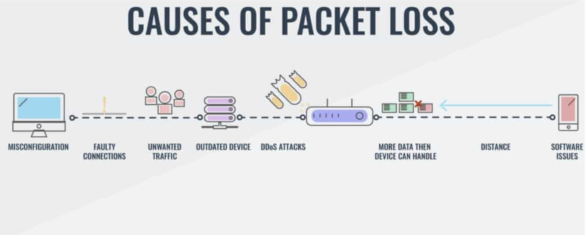

Internet: A vast network that connects computers all over the world.
World Wide Web or Web:A large group of interconnected public web pages or information that is accessible through the internet.
Link to the first ever website created!
Packet: A unit of data that can be sent across a network. A typical packet contains perhaps 1,000 or 1,500 bytes.
Packet loss is caused by interference, usually across wireless networks, or network congestion.
This is a protocol for transmitting HTML between web browsers and web servers. This is the core protocol that governs transmission of data on the internet.
It is an access protocol. The client computer requests through HTTP that the website be available. The web server responds via HTTP and shares the website data.
This is an extension of the the Hypertext Transfer Protocol (HTTP). It is used for secure communication and is encrypted using Transport Layer Security (TLS).
TCP stands for Transmission Control Protocol a communications standard that enables programs and devices to exchange information over a network. It is designed
to send packets across the internet and ensure the successful delivery of data.
The Internet Protocol (IP) address used for sending data from one device to another across the internet. Every device has an IP address that uniquely identifies it and
enables it to communicate with and exchange data with other devices connected to the internet.
IP address usually change each time you establish a new network connection.
Media access control address is a unique identifier for each device and never changes. Every node in a local area network (LAN) will be identified with a MAC address.
Cookies are tiny pieces of data downloaded by your computer when you visit a website. Some cookies track whether you have logged into a secure website. Other cookies
can track where you have been online. Some cookies store sensitive data such as credit card number.
HTML or Hypertext Markup Language is the standard markup language used to create the structure of a website. CSS or Cascading Style Sheets is the standard language
for creating a presentation style for your website. The code can be viewed in a browser.
If you were building a house, HTML would be the house frame and CSS would be the paint and exterior look.